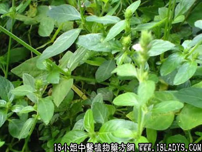

别名：山曱甴草。
植物名：爵床。
生长环境：本品为一年生草本。喜欢生于旷野草地上、或近河边、屋旁稍微潮湿的环境。
分布：广东省各地可见，广州附近尤多，亚洲热带亦有。
入药部分：全草。
采集期：夏、秋季。
自采地点：小山岗。
性味：性凉、味甘。
功能：清肝热、明目、消积滞、止痢。
主治、用量和用法：
1、幼儿积滞；2、小儿肝郁；3、肝热；4、下积，以上四项均干用5钱至1两，清水煎服，或加蜜枣同煎。
验方1：（治疳积肝郁方）干孩儿草5钱、独脚金3钱、蜜枣3枚、清水二碗，煎成大半碗，分次服。
（方解）本方以孩儿草之甘凉平肝，以健脾胃，配以独脚金解肝郁而消积滞，肝郁得舒，脾运得畅，疳积自去，为平肝健脾之剂，小儿服之最为适合。
（方歌）孩儿单汤是本名，疳积肝郁免其成，再加独脚金同煎，平肝健胃小儿灵。
验方2：（治疗儿童心肝火盛方）竹卷心、孩儿单、独脚金、旱莲草，每味3钱，清水煎服。
（方解）本方以竹卷心清心、旱莲草入肝肾凉血；孩耳草去肝火，独脚金消积健脾。全方药性和平，儿童服之，有益无损。
（方歌）儿童心肝火气旺，恶蛮厌食经不安，竹心孩儿旱莲草，独脚金来煎服康。
按：本品别名为曱甴草，与水曱甴草不同，用宜鉴别。又近人多用人字草代孩儿草，亦有功效。